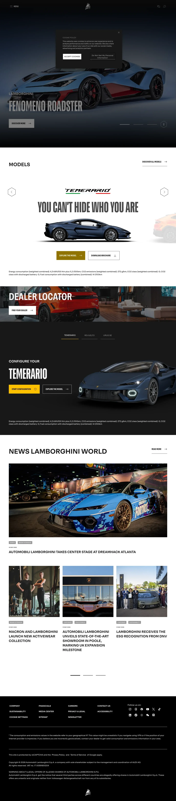

Lamborghini 主题
Lamborghini 的 Design.md 主题展示，围绕媒体内容、工业工具、制造工业、B2B 产品组织页面。
Supercar brand. True black surfaces, gold accents, dramatic uppercase typography.
媒体内容工业工具制造工业B2B 产品SaaS 产品开发工具浅色界面效率工具专业工具

来源
- 来源
- getdesign.md
- 镜像
- github:VoltAgent/awesome-design-md
- 网站
- https://lamborghini.com/
- 详情
- https://getdesign.md/lamborghini/design-md
色板
#FFC000: #FFC000#a0a0a0: #a0a0a0#000000: #000000#fbbf24: #fbbf24#8a8a8a: #8a8a8a#0a0a0a: #0a0a0a#e0e0e0: #e0e0e0#ffffff: #ffffff
字体
display: Helvetica Neuebody: Robotomono: ui-monospacehints: Helvetica Neue,Roboto,ui-monospace,Inter
圆角
control: 7pxcard: 7pxpreview: 7pxpill: 9999pxsource: design-md
间距
xxs: 80pxxs: 5.00remsm: 54pxmd: 3.38remlg: 40pxxl: 2.50remxxl: 0.42pxxxxl: 14pxsection: 24pxsection-lg: 16pxhero: 0pxband: 1pxspace-13: 8pxspace-14: 10pxspace-15: 2pxspace-16: 56pxsource: design-md
使用建议
建议
- 建议：Use absolute black ({#000000}) as the primary background — never dark gray as a substitute。
- 建议：Apply Lamborghini Gold ({#FFC000}) exclusively for primary CTA buttons — never for decorative purposes。
- 建议：Set all display headings in uppercase with LamboType — the brand voice is always SHOUTING。
- 建议：Use zero border-radius on buttons and cards — sharp angles are non-negotiable。
- 建议：Maintain tight line-heights (0.92–1.19) on display type to create dense, architectural text blocks。
避免
- 避免：Introduce additional accent colors beyond gold — the monochrome-plus-gold system is sacred。
- 避免：Apply border-radius to buttons or cards — curved edges contradict the angular vehicle aesthetic。
- 避免：Use LamboType in italic or decorative styles — the brand is always upright and direct。
- 避免：Add gradients to buttons or surfaces — depth comes from surface layering, not blending。
- 避免：Use light backgrounds as the primary canvas — darkness is the default state, light is the exception。
查看 DESIGN.md